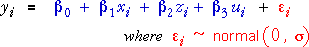
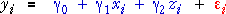
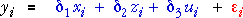
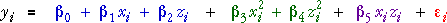
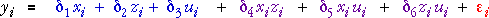

Linear model
The earlier pages of this section described experimental designs for mixtures — the factor values that will be used for the runs of the experiment. When the experiment is conducted, a response value is recorded from each run. Consider a 3-ingredient experiment in which the proportions of the three components are denoted by x, z and u. The simplest model for the response is a linear model,

This model has redundancy since x, z and u are linearly related — they sum to 1 — so we cannot get unique least squares estimates of the parameters. We could remove u from the model, replacing it by:
u = 1 - x - z
Doing this, the model is equivalent to a linear model involving only x and z,

where the new coefficients are related to those in the original formulation:
However when the model is written in this way, the symmetry in our treatment of the three factors disappears. A better formulation of the same model is:

Note that all three formulations of the model are identical in their modelling ability — they all result in identical fitted values.
In the final formulation of the linear model, the relative sizes of the three coefficients give information about the relative importance of the three ingredients.
If two ingredients have coefficients that are equal, the response does not depend on their relative sizes — the two ingredients are equivalent in their effect on the response.
Quadratic model
A linear model is often a poor fit to data from mixture models over the whole design space. A quadratic response surface model is often used. Noting again that one proportion is redundant in the model, the quadratic model can be expressed in terms of x and z as:

This again lacks symmetry in the treatment of the three proportions, so the quadratic model is usually written in the following equivalent form.

Again note that both formulations of the quadratic model are equivalent — they result in identical fitted values.
Estimation of parameters
These linear and quadratic models for mixture data are fitted in the same way as the corresponding models for non-mixture data:
The parameters are estimated by least squares.
Elongation of yarn
Polyethylene (Pe), Polystyrene (Ps), and Polypropylene (Pp), can be blended together to form fiber that is spun into yarn. A researcher is studying how the properties of this yarn depend on the mixture of the component raw materials.
In one experiment, the response variable of interest was yarn elongation in kilograms of force applied. A simplex-lattice design with m = 2 was used, giving 6 design points. There were two replicate observations for each of the pure blends and three replicates for the binary blends. (Note that this design does not involve any blends that contain mixtures of all three components.) The data are shown below.
| Polyethylene | Polystyrene | Polypropylene | Elongation | ||
|---|---|---|---|---|---|
| 0.0 | 0.0 | 1.0 | 16.8 | 16.0 | |
| 0.0 | 0.5 | 0.5 | 10.0 | 9.7 | 11.8 |
| 0.0 | 1.0 | 0.0 | 8.8 | 10.0 | |
| 0.5 | 0.0 | 0.5 | 17.7 | 16.4 | 16.6 |
| 0.5 | 0.5 | 0.0 | 15.0 | 14.8 | 16.1 |
| 1.0 | 0.0 | 0.0 | 11.0 | 12.4 | |
The diagram below shows the data and a linear model fitted to them.
Rotate the response surface (dragging with the mouse or using the buttons on the right) to get a better feel for this surface.
The linear model is clearly a poor fit — the actual response values are far from the least squares response surface for several mixtures.
Click the checkbox Quadratic terms to fit a quadratic model to the data. Again rotate the response surface to get a better feel for its shape.
The blends that give highest elongation are those with low polystyrene (far from the 100% polystyrene vertex) and between 50% and 100% polypropylene.
Finally, select Selected contours from the pop-up menu and click the x-z rotation button. (Note that the labels 'x' and 'z' on these buttons do not refer to variables in these mixture models.) The resulting contour map is the usual way that this typw of response surfaces is displayed on paper.